UnityCatLikeCoding-PseudorandomNoise
Table of Contents
UnityCatLikeCoding PseudorandomNoise note.
<!– more –>
Pseudorandom Noise
Unity4 Noise
Noise Derivatives
- Curl Noise https://www.cnblogs.com/idovelemon/p/12775127.html
- Noise Derivatives https://catlikecoding.com/unity/tutorials/noise-derivatives/
Unity2010 Noise
Hashing
需要随机性才能使事物变得不可预测、变化多端并显得自然。感知到的现象是真正随机的还是只是看起来随机并不重要。因此，我们可以使用完全确定性的东西，只要其不是显而易见的。软件本质上是确定性的, 设计不良的多线程代码可能会导致竞争条件，从而导致不可预测的结果，但这并不是随机性的可靠来源。真正可靠的随机性只能来源于外部（例如对大气噪声进行采样的硬件），而这些来源通常是不可用的。
通常不需要真正的随机性。真随机产生的任何东西都是一次性事件，无法重现。每次结果都会不同。理想的情况是，有一个过程，对于任何特定的输入，都会产生一个独特且固定的明显随机的输出。哈希函数可以做到。
// resolution = 32 // invResolution = 1.0/32.0 // x = 32 y = 32 // index = [0, 32*32-1] public void Execute(int index) { // v = [0, resolution-1] = [0, 31] 当前的行号 int v = (int)floor(invResolution * index + 0.00001f); // u = [0, resolution-1] 当前列号 int u = index - resolution * v; // 对uv坐标进行Hash运算 hashes[index] = hash.Eat(u).Eat(v); }
Hashing Space
在之前的教程中，我们在 HashJob 中将 index 值转化为整数 UV 坐标，然后对整数 UV 进行 Hash 运算, 得到平面上对应点的 Hash 值。在本教程中，我们直接将空间位置传递给 HashJob，直接使用 index 获取对应的空间位置。这样就可以将空间位置和 Hash 值生成分离开，让 Hash 值生成适用于任意的形状和分辨率。
Sample Shapes
下面代码表示一个平面形状, 执行 Job 会生成一系列 position 和 normal, 这些 position 都在同一个平面上， normal 为对应点的法线。当然，所有点的法线都相同，就是平面的法线。
public static class Shapes { [BurstCompile(FloatPrecision.Standard, FloatMode.Fast, CompileSynchronously = true)] public struct Job : IJobFor { [WriteOnly] NativeArray<float3> positions; [WriteOnly] NativeArray<float3> normals; public float resolution, invResolution; public float3x4 positionTRS; public void Execute (int i) { float2 uv; // y = [0, resolution-1] 行号 uv.y = floor(invResolution * i + 0.00001f); // i - resolution * uv.y 列号 // x = [-0.5, 0.5] uv.x = invResolution * (i - resolution * uv.y + 0.5f) - 0.5f; // y = [-0.5, 0.5] uv.y = invResolution * (uv.y + 0.5f) - 0.5f; // 对 position 进行变换 positions[i] = mul(positionTRS, float4(uv.x, 0f, uv.y, 1f)); // 对 normal 进行变换 normals[i] = normalize(mul(positionTRS, float4(0f, 1f, 0f, 1f))); } } }
Manual Vectorization
如前所述，在我们引入向量类型后，我们的 Job 自动向量化失败了。典型的自动向量化工作是将对 float、int 和其他此类原始值执行的操作替换为对 float4、int4 等执行的相同操作。然后，利用 SIMD 指令并行执行四次迭代。 不幸的是，这不再适用于我们的 Job，因为我们使用 float3 值作为位置和法线向量。但是通过一些工作进行手动向量化是可行的。
向量化 SmallXXHash
实现 SmallXXHash4，其支持包含 4 个分量的向量数据。
向量化 HashJob
[BurstCompile(FloatPrecision.Standard, FloatMode.Fast, CompileSynchronously = true)] struct HashJob : IJobFor { [ReadOnly] // 输入数据从 float3 变为 float3x4 public NativeArray<float3x4> positions; [WriteOnly] // 输出数据从 uint 变为 uint4 public NativeArray<uint4> hashes; public SmallXXHash4 hash; public float3x4 domainTRS; // 支持4x3 顶点的变换 float4x3 TransformPositions(float3x4 trs, float4x3 p) => float4x3( trs.c0.x * p.c0 + trs.c1.x * p.c1 + trs.c2.x * p.c2 + trs.c3.x, trs.c0.y * p.c0 + trs.c1.y * p.c1 + trs.c2.y * p.c2 + trs.c3.y, trs.c0.z * p.c0 + trs.c1.z * p.c1 + trs.c2.z * p.c2 + trs.c3.z ); public void Execute(int index) { // 将3x4 的数据变为 4x3 的数据 float4x3 p = transpose(positions[index]); p = TransformPositions(domainTRS, p); int4 u = (int4)floor(p.c0); int4 v = (int4)floor(p.c1); int4 w = (int4)floor(p.c2); // 利用向量化后的SmallXXHash4 计算 hash 值 hashes[index] = hash.Eat(u).Eat(v).Eat(w); } }
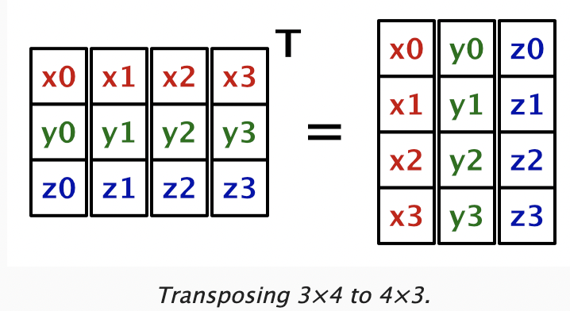
void Update() { // ...... new HashJob{ // 将 NativeArray<uint> 解释为NativeArray<uint4> hashes = hashes.Reinterpret<uint4>(4), // 将 NativeArray<float3> 解释为 NativeArray<float3x4> positions = positions.Reinterpret<float3x4>(3*4), hash = SmallXXHashX.Seed(seed), domainTRS = domain.Matrix }.ScheduleParallel(hashes.Length / 4, resolution, handle).Complete(); }
向量化 ShapeJob
public static class Shapes { public struct Job : IJobFor { [WriteOnly] // 输入数据从 float3 变为 float3x4 NativeArray<float3x4> positions; [WriteOnly] // 输入数据从 float3 变为 float3x4 NativeArray<float3x4> normals; public float resolution; public float invResolution; public float3x4 positionTRS; public void Execute(int index) { float4x2 uv; // index = [0, resolution/4] // 一次处理相邻的4个点 float4 i4 = 4f * index + float4(0f, 1f, 2f, 3f); uv.c1 = floor(invResolution * i4 + 0.00001f); uv.c0 = invResolution * (i4 - resolution * uv.c1 + 0.5f) - 0.5f; uv.c1 = invResolution * (uv.c1 + 0.5f) - 0.5f; // 对4组位置进行变换 positions[index] = transpose(TransformVectors(positionTRS, float4x3(uv.c0, 0f, uv.c1))); float3x4 n = transpose(TransformVectors(positionTRS, float4x3(0f, 1f, 0f), 0f)); // 对4组normal进行变换 normals[index] = float3x4(normalize(n.c0), normalize(n.c1), normalize(n.c2), normalize(n.c3)); } float4x3 TransformVectors(float3x4 trs, float4x3 p, float w = 1f) => float4x3( trs.c0.x * p.c0 + trs.c1.x * p.c1 + trs.c2.x * p.c2 + trs.c3.x * w, trs.c0.y * p.c0 + trs.c1.y * p.c1 + trs.c2.y * p.c2 + trs.c3.y * w, trs.c0.z * p.c0 + trs.c1.z * p.c1 + trs.c2.z * p.c2 + trs.c3.z * w ); } }
Octaheron and Octaheron Sphere
通过对平面进行变形可以得到 Octaheron, 由 Octaheron 可以得到 Octaheron Sphere。
Point4 p; // 下面的点p 组成一个平面 p.positions.c0 = uv.c0 - 0.5f; p.positions.c1 = uv.c1 - 0.5f; p.positions.c2 = 0f; // 对c2 进行调整，即可得到半封闭的 正八面体 p.positions.c2 = 0.5f - abs(p.positions.c0) - abs(p.positions.c1); // 再进行调整，得到 封闭的正八面体 float4 offset = max(-p.positions.c2, 0f); p.positions.c0 += select(-offset, offset, p.positions.c0<0f); p.positions.c1 += select(-offset, offset, p.positions.c1<0f); // 将正八面体转换为球 float4 scale = 0.5f * rsqrt( p.positions.c0 * p.positions.c0 + p.positions.c1 * p.positions.c1 + p.positions.c2 * p.positions.c2 ); p.positions.c0 *= scale; p.positions.c1 *= scale; p.positions.c2 *= scale; p.normals = p.positions; return p;
Tips:
// c 为 true 返回 b，否则返回 a int4 select(int4 a, int4 b, bool4 c)
Value Noise
1D Noise
前面我们使用 Hashing 可以为整数坐标生成独立的 hash 值。为了让 noise 平滑并且连续，我们需要在整数坐标之间混合 hash 值。
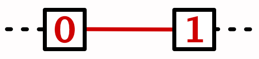
2D Noise
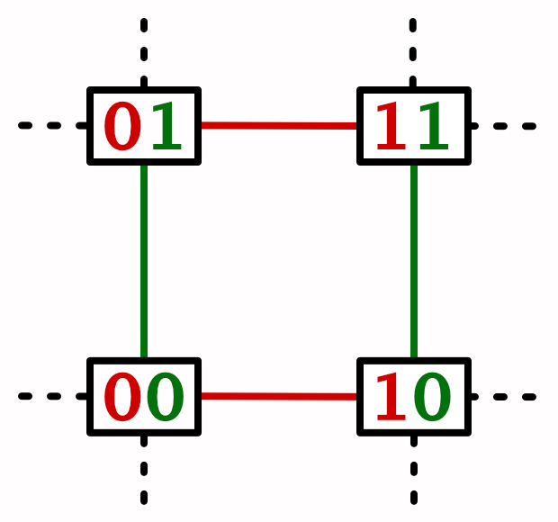
Smooth Noise
虽然我们有一个连续的 2D 图案，但它还不平滑。格子之间的过渡是线性插值，因此沿着格子正方形的边缘会发生突然变化。为了使这个平滑，我们需要考虑噪声的变化率。如果我们有一个函数，那么它的一阶导函数描述了它的变化率。由于线性插值产生一条直线，它的导数是一个常数值。二阶导函数是一阶导数的导数。可以将其视为曲率的变化率，或噪声的加速度。线性插值的二阶导数始终为零。
例如，在下图中,两个一维的 Spans 在-1，0，1 之间，一维噪声值显示为黑色实线，其一阶导数为橙色虚线，其二阶导数为紫色虚线。导数除以 6 以按比例缩小，以便更容易看到。请注意，中间格点处的橙色线存在不连续性，噪声突然改变方向。
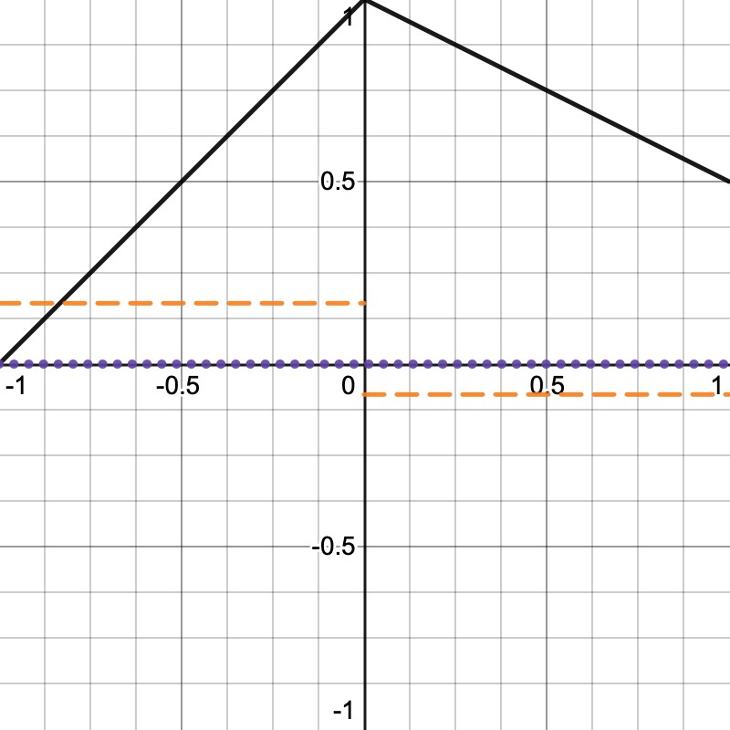
对插值系数使用 smoothstep (smoothstep 对应的函数为 \(3t^2 - 2t^3\) )可以保证一阶导数连续（一阶导数为 \(6t-6t^2\) ），但是二阶导数依然不连续(二阶导数为 \(6-12t\) )：
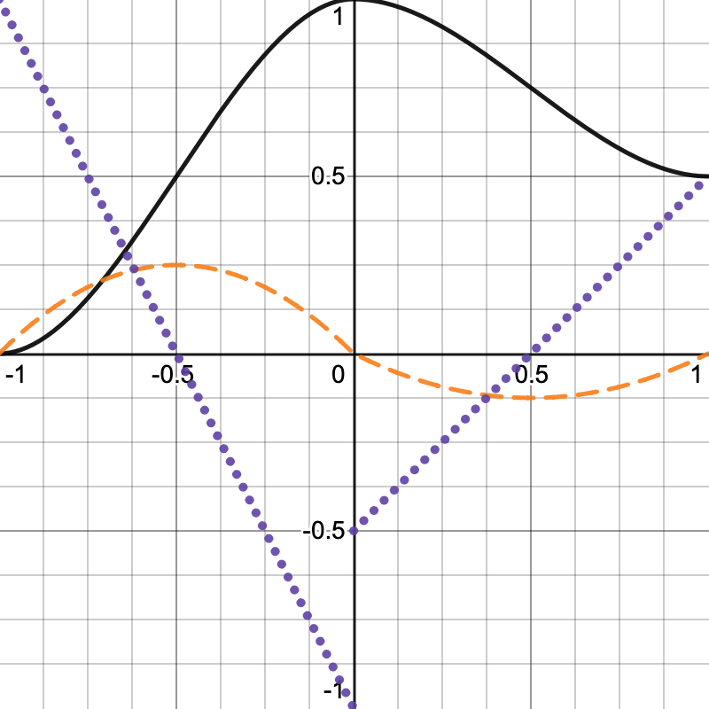
使用 \(6t^5 - 15t^4 + 10t^3\) 可以保证一阶导数连续( \(30t^4-60t^3 + 30t^2\) )，同时二阶导数也连续( \(120t^3-180t^2+60t\) )。对于输入值 0 和 1，一阶导数和二阶导数的值都为 0。
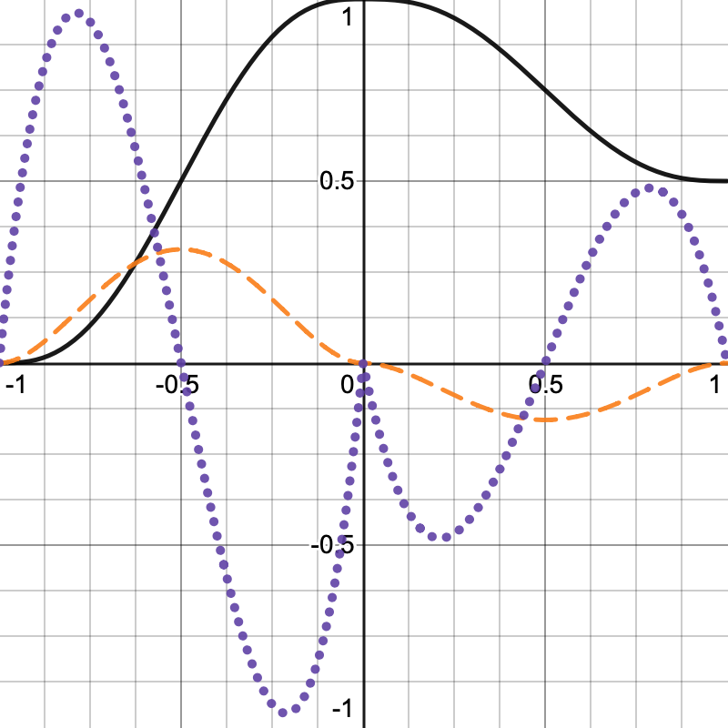
Perlin Noise
Value Noise 属于 Lattice Noise，在 Lattice 点处定义的都是常数值。在这些常数值之间进行插值，从而得到平滑的模式，这种噪声 Lattice (格子) 依然很明显。
另一种方法是在函数之间进行插值，而不是在常量值之间进行插值。 这意味着每个格子点处都有自己的函数。 为了保持简单和统一，所有点都应该使用相同的函数，只是参数有所不同。 最简单的函数是一个常数值，这就是 Value Noise(值噪声)。更复杂一点的是一个线性函数，该函数线性依赖于相对于格子点的样本的坐标。最简单直接的函数是 f(x)=x，其中 x 是相对格子点的坐标。 这将产生以格子点为中心的线性梯度。因此，这种类型的噪声被称为梯度噪声。
Tips:
梯度的本意是一个向量（矢量），表示某一函数在该点处的方向导数沿着该方向取得最大值，即函数在该点处沿着该方向（此梯度的方向）变化最快，变化率最大（为该梯度的模）。
在下图中，插值方式采用 smoothstep，让 Value.Evaluate(SmallXXHash4 hash, float4 x) 直接返回 x (即，Value.Evaluate 变为了简单的梯度函数 f(x) = x), 黑色线为对梯度进行插值得到的值，红绿蓝三条线为梯度。在 Lattice 点处的梯度都为 0，在 Lattice 点之间的 Span 的中点，梯度也为 0。

看下面文件，会更加直观一些（其实上面，红线为[-1,0]区间内的点对应的-1 晶格点的梯度值，蓝线为[0,1]区间内的点对应的 1 晶格点的梯度值, 绿线为[-1,1]区间内的点对应的 0 晶格点的梯度值）。
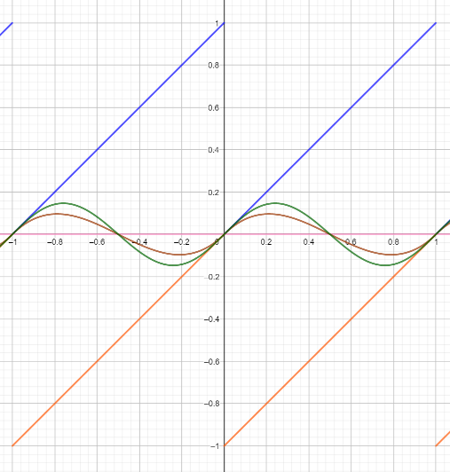
./UnityCatLikeCoding/noise03_gradient_graph.ggb
值噪声可以被认为是梯度噪声的简单情况（值噪声的梯度函数为固定的值，不会随样本点位置而变化）。
Perlin Noise
Ken Perlin 提出了梯度噪声的第一个版本，因此这种经典版本的噪声被称为 Perlin 噪声。 前面我们提到的梯度噪声相比，Perlin 噪声增加了梯度向量可以有不同方向的想法。这些不同梯度的插值产生了比值噪声更多样化和更少块状的图案。
Perlin noise 是基于 permutation table 来为每个格子生成随机值的。permutation table (排列表) 并不是生成伪随机值的唯一方法。这种方法适用于简单的硬件，但是域小, 不支持 seed，也无法矢量化（其需要多个数组查询，该操作没有对应的 SIMD 指令）。因此，本节我们基于 SmallXXHash4 来为每个格子生成随机值。
- https://en.wikipedia.org/wiki/Perlin_noise
- Understanding Perlin Noise http://adrianb.io/2014/08/09/perlinnoise.html
1D Gradients
Ken Perlin 并没有创造一个 1D Noise 变体，因为，1D Noise 并没有什么用，但是，1维的 Noise 可以帮助我们更容易地理解高维度 Noise。前面我们使用了固定的梯度函数 f(x) = x。按照 Perlin Noise 的思想，lattice points 的梯度可以是不同的。1维的情况下，很显然另一个不同的简单的梯度为：f(x) = -x.
让 Perlin.Evaluate(SmallXXHash4 hash, float4 x) 的返回值为 select(-x, x, ((uint4)hash & 1) == 0), 这样格子点之间的每个 Span 就会有 4 种插值可能性：positive-positive, negative-negative, positive-negative, 以及 negative-positive。因为，positive 和 negative 互为镜像，所以，只有两种情况：梯度相同和梯度不同。
下图为 (-1, 0) 区间为 negative-positive, (0, 1)区间为 positive-negative:
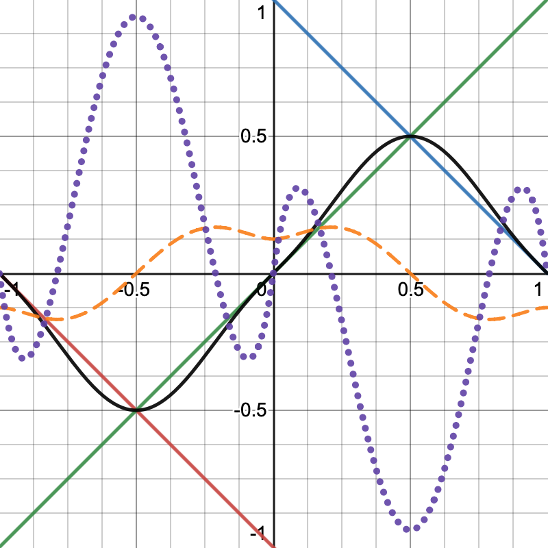
下图为 (-1, 0) 区间为 positive-positive, (0, 1)区间为 positive-negative:
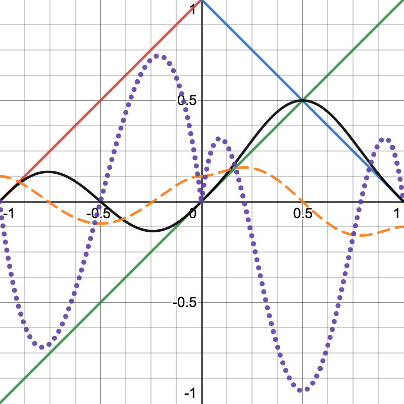
最终我们得到的 1D 的 binary Perlin noise 如下图（domains scale 16，resolution 256）：
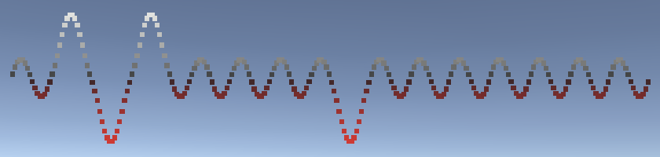
public float4 Evaluate (SmallXXHash4 hash, float4 x) => 2f * select(-x, x, ((uint4)hash & 1) == 0);
Variable Gradients
我之所以将上面得到的 Perlin Noise 称为 Binary Perlin Noise, 是因为其梯度只有两种状态。因此，噪声由所有指向同一方向的梯度序列组成，除非存在符号翻转。 翻转处显示为最大振幅波，而图案的其余部分由相同的小波组成。 这看起来很死板。
将 Perlin.Evaluate 修改如下, 不再是执行一个 binary 选择，我们使用 hash 来缩放相对坐标并使其在(-1,1)范围内 (Tips: ，x的范围为[0, 1])：
public float4 Evaluate (SmallXXHash4 hash, float4 x) => 2f * (hash.Floats01A * 2f - 1f) * x;

经过上面的修改，图中包含了变化很大的梯度，且振幅也不同。使得只有很少的波能达到最大振幅，因此 Noise 整体的振幅减弱了。我们可以将 variable 和 binary 方式结合起来，使用第一位来选择符号并且使用 hash 来缩放选择结果,将 Perlin.Evaluate 修改如下:
public float4 Evaluate (SmallXXHash4 hash, float4 x) => 2f * hash.Floats01A * select(-x, x, ((uint4)hash & 1) == 0);
但是，上面在两次选择中都使用了第一位数据(hash.Floats01A 会使用第一位数据)，这引入了一些相关性。为了使两次选择更加独立，我们使用第 9 位来确定符号：
public float4 Evaluate (SmallXXHash4 hash, float4 x) => 2f * hash.Floats01A * select(-x, x, ((uint4)hash & 1 << 8) == 0);
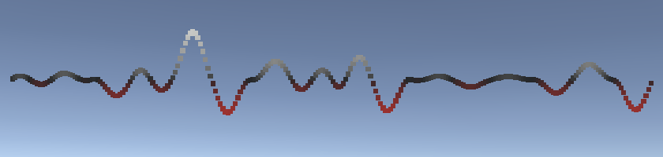
这种方法的优点是我们可以引入最小振幅，而不用管梯度方向如何。通过这种方式，我们可以防止出现退化区域，在退化区域多个连续格点处的值被缩放后最终接近于零，这会产生一个平坦区域。最简单的方法是将最小振幅设置为 1 并将 hash 浮点值叠加到最小振幅上。如下：
public float4 Evaluate (SmallXXHash4 hash, float4 x) => (1f + hash.Floats01A) * select(-x, x, ((uint4)hash & 1 << 8) == 0);
整体的逻辑如下图所示
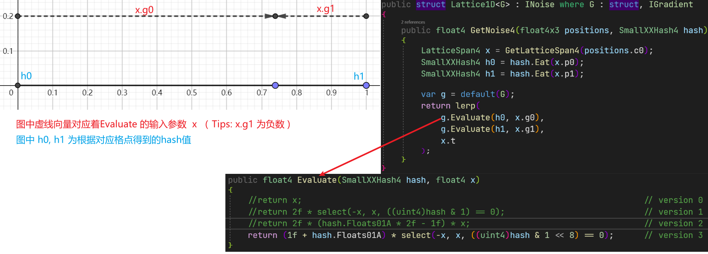
下面文件中展示了多种版本的 1d perlin noise 的生成过程：
./UnityCatLikeCoding/noise03_1d-perlin.ggb
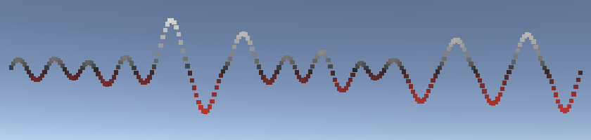
2D Gradients
2D 的情况下，梯度不再只是轴对齐的了，梯度向量可以旋转 360 度。为了生成这样的一个向量，我们可以使用我们在生成 octahedron-sphere 形状时，类似的方法。下图展示了创建 Cube 的过程：
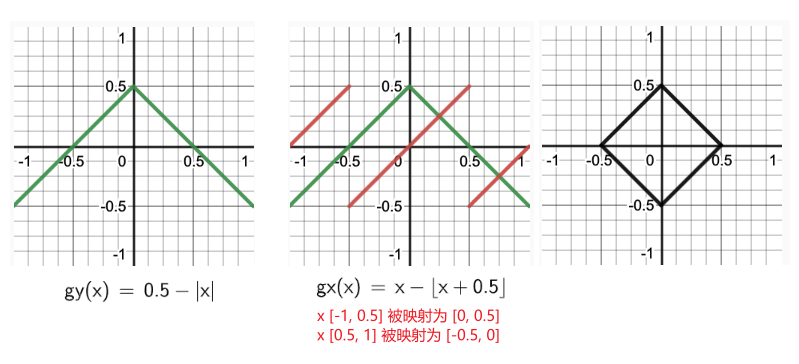
Tips: 图中注释错误，应该为 x[-1, -0.5] 被映射为 [0, 0.5]。（注释中少了一个负号）
最终 2D 的 Perlin Noise 为:
public float4 Evaluate (SmallXXHash4 hash, float4 x, float4 y) { // 利用SmallXXHash4生成2D梯度向量 (gx, gy) float4 gx = hash.Floats01A * 2f - 1f; float4 gy = 0.5f - abs(gx); gx -= floor(gx + 0.5f); // 计算梯度向量和位置向量的点积 return (gx * x + gy * y) * 2f; }
整体的逻辑如下图所示
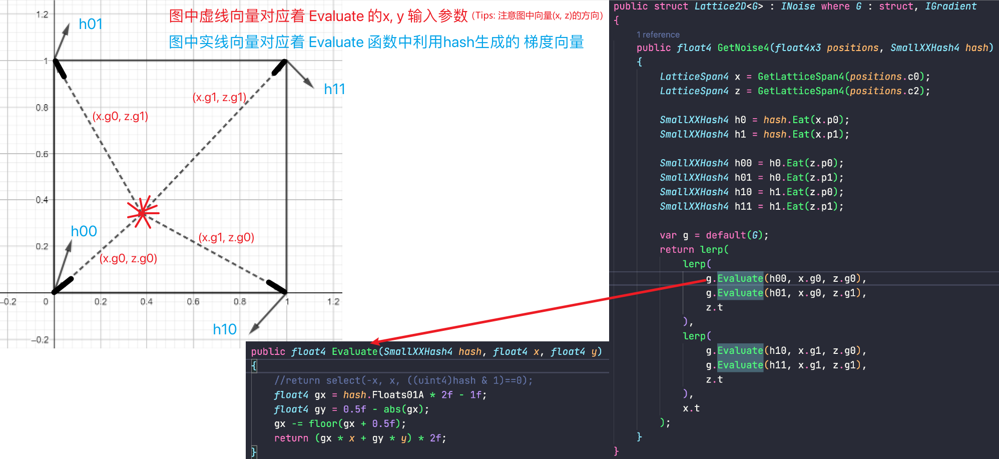
Normalized 2D Noise
为了标准化噪声，我们需要确定其当前的最大振幅。如果一个格子正方形有四个梯度都指向它的中心，那么它的最大值将在中间达到。 因为这将是四个相等梯度的平均值，所以我们只需要计算那个点的单个梯度的值。 完美的对角梯度是 f(x,y)=(x+y)/2，所以中间的振幅是 f(0.5,0.5)=1/2。 然而，这并不是整个噪声的最大振幅。 还有另一种具有更大振幅的梯度配置。
下面文件展示了归一化 2D Noise 的流程：
3D Gradients
使用生成八面体的方式来生成 3D 梯度向量，如下图：
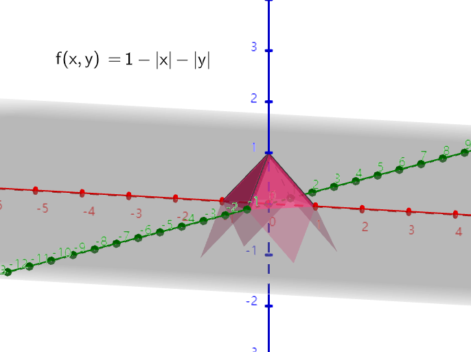
同样也要进行归一化，原理和 2D Noise 一样。最终 3D Perlin Noise 为：
public float4 Evaluate(SmallXXHash4 hash, float4 x, float4 y, float4 z) { float4 gx = hash.Floats01A * 2f - 1f; float4 gy = hash.Floats01D * 2f - 1f; float4 gz = 1.0f - abs(gx) - abs(gy); float4 offset = max(-gz, 0f); gx += select(-offset, offset, gx < 0f); gy += select(-offset, offset, gy < 0f); return (gx * x + gy * y + gz * z) * (1f / 0.56290f); }
Noise Variants
Fractal Noise
Frequency : 原来默认的周期为 1（每个格子之间的间隔为 1），使用 frequency 对位置进行缩放，就可以支持不同频率。
Octaves : 音乐简谱的音符 1 2 3 4 5 6 7 i 第一个 1 就是最后一个 1 的低八度, 最后一个 1 就是第一个 1 的高八度。
Lacunarity : 间隙。Octaves 之间，频率变化的比例。
Persistence : 余辉。Octaves 之间，振幅变化的比例。
Turbulence
分形 Perlin 噪声的一个常见变体是对每个 octave 得到的值的绝对值求和。这会导致 Octave 在它们在通过零的地方反弹，从而产生折痕。将多个这样的 Octaves 分层会产生 Turbulence Pattern，因此也将这种噪声称为 Perlin 噪声的 Turbulence 变体。当然，值噪声也支持这种 Turbulence 变体。
Tiling
原本 Lattices 的间隔为 1，经过 Fractal 后，[0, 1] 范围变为[0, frequency-1], 因此将 coordinates 变换到 [0, frequency-1] 范围, 就可以实现 Tiling。
public LatticeSpan4 GetLatticeSpan4(float4 coordinates, int frequency) { coordinates *= frequency; float4 points = floor(coordinates); LatticeSpan4 span; span.p0 = (int4)points; span.p1 = span.p0 + 1; span.g0 = coordinates - span.p0; span.g1 = span.g0 - 1f; // 下面取余计算不支持矢量化 span.p0 %= frequency; span.p0 = select(span.p0, span.p0 + frequency, span.p0<0); span.p1 = (span.p0 + 1) % frequency; span.t = coordinates - points; //span.t = smoothstep(0, 1, span.t); span.t = span.t * span.t * span.t * (span.t * (span.t * 6f - 15f) + 10f); return span; }
上面代码中，整数余数的计算是通过整数除法完成的，其不支持矢量化。我们可以使用浮点数除法来代替取余操作，浮点数除法是支持矢量化的，如下：
public LatticeSpan4 GetLatticeSpan4(float4 coordinates, int frequency) { coordinates *= frequency; float4 points = floor(coordinates); LatticeSpan4 span; span.p0 = (int4)points; span.p1 = span.p0 + 1; span.g0 = coordinates - span.p0; span.g1 = span.g0 - 1f; //span.p0 %= frequency; // 使用浮点数除法来代替整数取余操作 span.p0 -= (int4)(points / frequency) * frequency; span.p0 = select(span.p0, span.p0 + frequency, span.p0<0); span.p1 = span.p0 + 1; span.p1 = select(span.p1, 0, span.p1==frequency); span.t = coordinates - points; //span.t = smoothstep(0, 1, span.t); span.t = span.t * span.t * span.t * (span.t * (span.t * 6f - 15f) + 10f); return span; } // 更进一步，使用ceil方法来避免浮点数精度问题和舍入问题 public LatticeSpan4 GetLatticeSpan4(float4 coordinates, int frequency) { coordinates *= frequency; float4 points = floor(coordinates); LatticeSpan4 span; span.p0 = (int4)points; span.p1 = span.p0 + 1; span.g0 = coordinates - span.p0; span.g1 = span.g0 - 1f; //span.p0 %= frequency; // 使用浮点数除法来代替整数取余操作 span.p0 -= (int4)ceil(points / frequency) * frequency; span.p0 = select(span.p0, span.p0 + frequency, span.p0<0); span.p1 = span.p0 + 1; span.p1 = select(span.p1, 0, span.p1==frequency); span.t = coordinates - points; //span.t = smoothstep(0, 1, span.t); span.t = span.t * span.t * span.t * (span.t * (span.t * 6f - 15f) + 10f); return span; } // example: // points = 15.0f frequency = 4 // 15 % 4 = 3 // version0 整数取余 // 15-(int)(15.0f/4)*4 = 15-12 = 3 // version1 浮点数除法 // 15-(int)ceil(15.0f/4)*4 = 15-16 = -1 // version2 浮点数除法 + ceil
下图为未矢量化和矢量化后的对比：
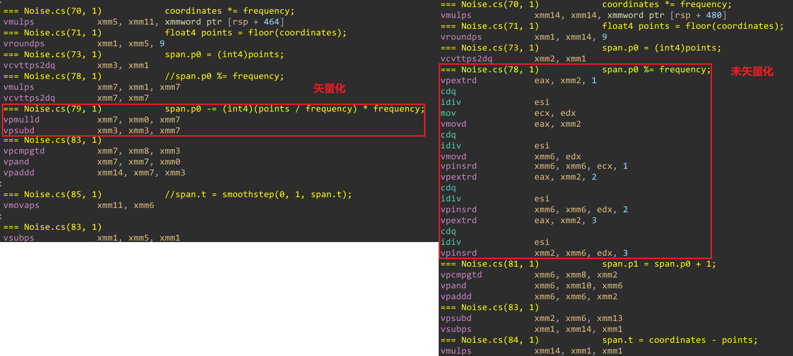
- 编程语言中，取余和取模的区别到底是什么？ https://www.zhihu.com/question/30526656
Voronoi Noise
Distance to Nearest Point
除了值噪声和梯度噪声之外，还有第三种常见类型的噪声。其基本思想为，用任意点填充空间，然后寻找和当前点距离最近的填充点，将他们之间的距离作为当前点的噪声值。其生成的图案看起来像一个 Voronoi 图，因此它被称为 Voronoi 噪声或细胞噪声（Cell Noise）。 这种类型的噪声最早是由 Steven Worley 提出的，因此也被称为 Worley 噪声。
Incoporating Adjacent Spans
之前的噪声只考虑当前格子。Voronoi 噪声值是当前点到最近的填充点的距离，如果不考虑相邻的格子，噪声就会不连续。
public float4 GetNoise4 (float4x3 positions, SmallXXHash4 hash, int frequency) { LatticeSpan4 x = default(L).GetLatticeSpan4(positions.c0, frequency); float4 minima = 2f; // 考虑相邻的格子 for (int u = -1; u <= 1; u++) { SmallXXHash4 h = hash.Eat(x.p0 + u); minima = UpdateVoronoiMinima(minima, abs(h.Floats01A + u - x.g0)); } return minima; }
Tiling
由于计算噪声值时会考虑相邻的格子，因此按照 frequency 进行 Tiling 可能会导致边界上不连续，这种不连续的情况分为两种：
- 相邻的格子位置小于 0
- 相邻的格子位置大于(freqency-1)，即等于 freqency
小于 0 时，将坐标设置为 freqency-1 即可。
等于 freqency 时，只需要将坐标重置为 0 即可。
Two points per Lattice Square
当前我们生成噪声值的方式，会产生超过 1 的噪声值（当前生成的最大噪声值为√2）。
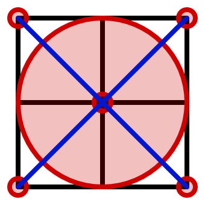
不过超过 1 的噪声占比并不大，将超 1 的噪声值设置为 1，没超过 1 的噪声值设置为 0，可以直观地看到超过 1 的噪声所占比例：
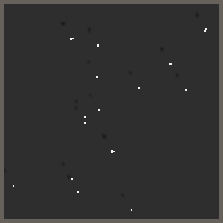
允许噪声值超过 1，意味着距离当前点的最近填充点可能在相邻的格子之外，如下图所示(中心的格子是当前处理的点所在的格子)，为了求出最近点，需要便利 21 个格子。

遍历 21 个格子消耗太大了，不太现实。我们可以将计算得到的距离 Clamp 到 [0, 1] 范围。此时在距离超过 1 的区域，噪声值都会为 1。下图展示了，限制最大距离后，最近填充点所占区域范围:
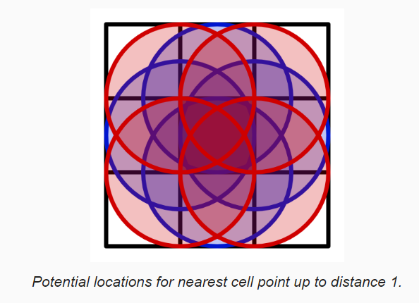
虽然，无法完全避免这种情况，但是我们可以通过增加每个格子内填充点的数量来减少这种情况。SmallXXHash4 一次会生成 4 个 0-1 范围的随机值，因此我们可以通过下面方法，增加一个填充点：
public float4 GetNoise4(float4x3 positions, SmallXXHash4 hash, int frequency) { var l = default(L); LatticeSpan4 x = l.GetLatticeSpan4(positions.c0, frequency); LatticeSpan4 z = l.GetLatticeSpan4(positions.c2, frequency); float4 minima = 2f; for(int u=-1; u<=1; u++) { SmallXXHash4 hx = hash.Eat(l.ValidateSingleStep(x.p0 + u, frequency)); float4 xOffset = u - x.g0; for(int v=-1; v<=1; v++) { SmallXXHash4 h = hx.Eat(l.ValidateSingleStep(z.p0 + v, frequency)); float4 zOffset = v - z.g0; minima = UpdateVoronoiMinima(minima, GetDistance(h.Floats01A + xOffset, h.Floats01B + zOffset)); // 增加一个填充点 minima = UpdateVoronoiMinima(minima, GetDistance(h.Floats01C + xOffset, h.Floats01D + zOffset)); } } return min(minima, 1f); } }
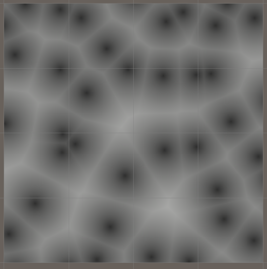
每个格子中随机填充两个点，噪声值为当前点到最近填充点的距离。因此上图中每个格子内有两个黑点, 每两个黑点之间的中垂线是白色亮线，黑点到白色亮线亮度逐渐增加。
Distance to Second-Nearest Point
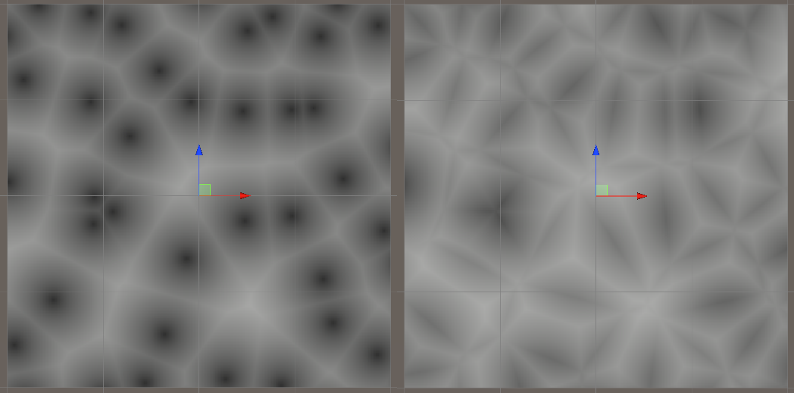
上面右图中，噪声值为当前点到第二最近填充点的距离。填充点中垂线上的值最小(这里的颜色值虽然看起来暗，却和左边相同位置看起来亮的颜色值相同)，白色的亮线经过填充点。
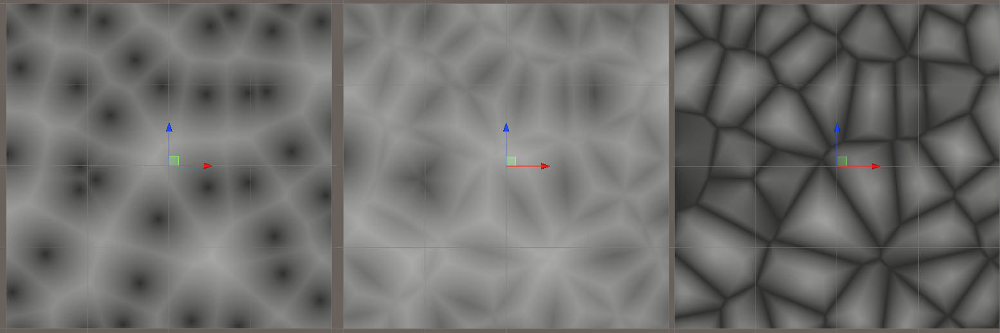
上面右图为中间图减去左边图的效果。左边图和中间图中填充点中垂线上的值相同，中垂线是左边图噪声值最大的地方，确实中间图噪声值最小的地方，所以中间图减去左边图，就会让中垂线更加暗。
Distance Metrics
前面度量距离的方式是欧几里得距离的平方。还可以使用其他方式度量距离。
Chebyshev
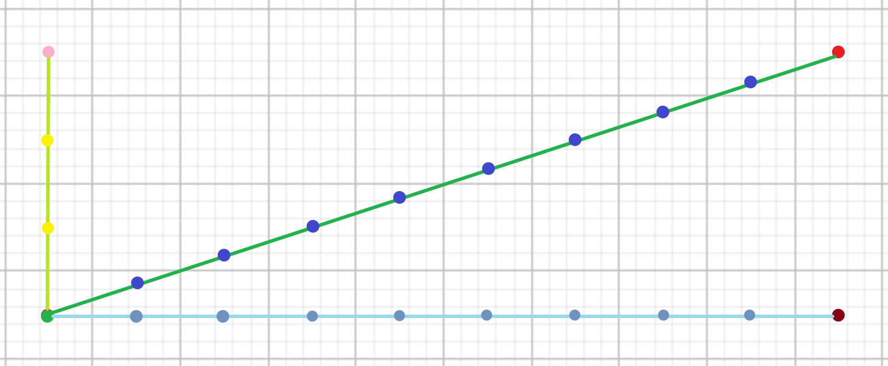
Chebyshev 距离为国际象棋中，国王的棋盘距离，其描述了一个国王需要多少步才能达到棋盘上的目的地（对于国王来说对角线运动与轴对齐运动相同，即一个回合只能在轴对齐和对角线方向移动一格），Chebyshev 距离等于各个维度的欧几里得距离中最大的欧几里得距离，这意味着 Chebyshev 距离在所有维度上都是相同的。由于该性质，我们不需要限制最小值（格子范围为[0, 1]，在任意维度上，距离都不会超过 1，因此不需要在噪声值和 1 之间去最小值）。
public struct Chebyshev : IVoronoiDistance { public float4 GetDistance (float4 x) => abs(x); public float4 GetDistance (float4 x, float4 y) => max(abs(x), abs(y)); public float4 GetDistance (float4 x, float4 y, float4 z) => max(max(abs(x), abs(y)), abs(z)); // 不需要执行 min(minima.c0, 1) min(minima.c1, 1) public float4x2 Finalize1D (float4x2 minima) => minima; public float4x2 Finalize2D (float4x2 minima) => minima; public float4x2 Finalize3D (float4x2 minima) => minima; }
下图为 3D Chebyshev Voronoi 噪声，从左到右依次为 VoronoiChebychevF1 VoronoiChebychevF2 VoronoiChebychevF2MinusF1:

Chebyshev Voronoi 噪声的 Cell 具有对角线或轴对齐的边缘，它们的内部梯度形成方形图案。 与 Worley 噪声更 organic 的外观相比，其具有人工化的外观。 此外，轴对齐平面采样 3D 噪声会产生颜色均匀的方形区域(上图就是 3D Chebyshev Voronoi 噪声)，此时最大的距离在第 3 个维度上，所以上图方形区域内的噪声值都相同。
下图为 2D Chebyshev Voronoi 噪声，从左到右依次为 VoronoiChebychevF1 VoronoiChebychevF2 VoronoiChebychevF2MinusF1:
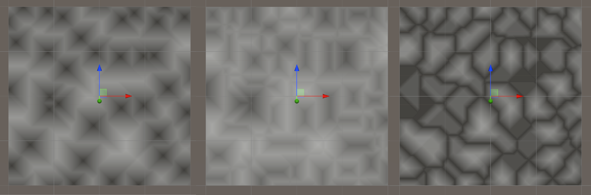
上面左图中最黑的十字中心为填充点。可以看到每个格子内有两个填充点。由于 Chebyshev 距离是各个维度中，最大的距离。与 x 轴平行的线上在 y 方向上距离某个填充点的距离是相同的，与 y 轴平行的线上在 x 方向上距离某个填充点的距离是相同的，因此形成了轴对齐的边缘和方形的图案。过填充点的十字线上的点，到填充点的 x 方向距离和 y 方向距离相同，并且距离填充点越远，Chebyshev 值越大，因此形成了渐变增量的十字黑线。如下图所示：
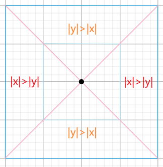
白色的 45 度或 135 度斜线，则是由于到两个填充点的 x 距离和 y 距离相同形成的，如下图所示(黄色线表示当前点到右边填充点的 y 方向距离，橙色线表示当前点到左边填充点的 x 方向距离)：
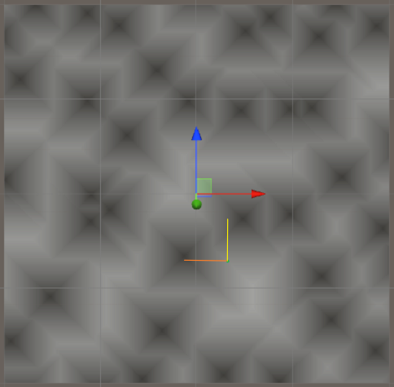
Other Metrics
- Worley Squared
使用欧几里得距离的平方来度量距离，可以得到类似 Worley 的噪声，其平均振幅更小。这种距离度量方式计算消耗更小。
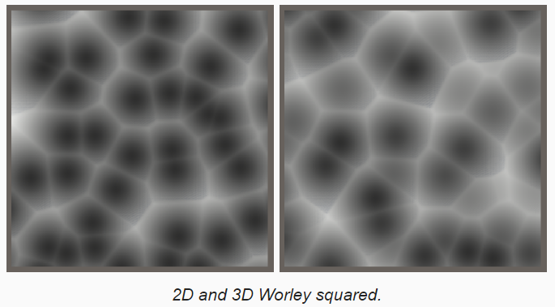
- Manhattan Distance
这种距离度量方式对应于国际象棋中的车移动方式(和中国象棋中的车一样，只能左右上下移动，不能斜着移动)
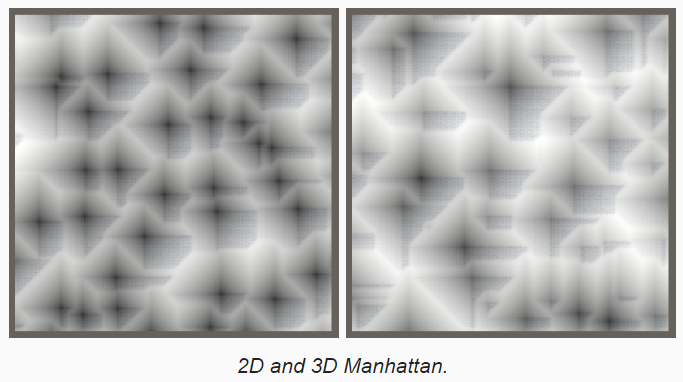
- Cell Hash
为每个 Cell 生成一个唯一的值，来显示 Cell。
2D noise 中，从 Hash 中取 4 位数据做 Cell 颜色值，还剩下 28(32-4=28) 位数据，28 位数据分配给两个填充点，一个填充点 14 位，每个填充点对应一个 2D 的坐标，因此每个坐标分量需要 7 位(14/2)。
3D noise 中，从 Hash 中取 4 位数据做 Cell 颜色值，还剩下 28(32-4=28) 位数据，28 位数据分配给两个填充点，一个填充点 14 位，每个填充点对应一个 3D 的坐标，因此每个坐标分量需要 4 位(14/3)。
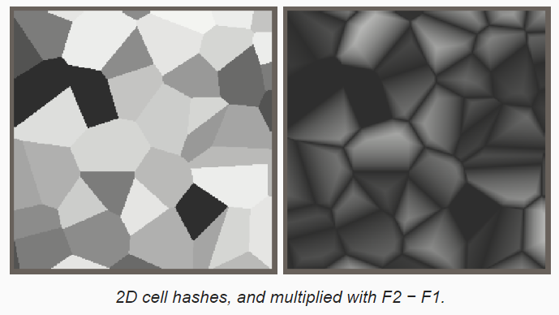
Simplex Noise
Ken Perlin 创建了 Perlin Noise 之后，又开发出了另一种形式的 Noise，他将这种 Noise 命名为 Simplex Noise。这种 Noise 使用 kernel summation 来代替插值，使用 simplex grid 来代替 hypercube grid。这里 kernel 可以被认为是一个 stamp 或一个 mask 来限制一个 pattern 的影响。将多个 kernel 样本(每个样本的中心在不同的位置)加在一起生成最终的噪声值。
Simplex 是最简单的多胞形（多胞形是一类由平的边界构成的几何对象。多胞形可以存在于任意维中。多边形为二维多胞形，多面体为三维多胞形，也可以延伸到三维以上的空间，如多胞体（英语：polyhedron）即为四维多胞形。），它占据所有可用维度的空间。 直线段是一维 Simplex。 三角形是二维 Simplex。 正方形不是 2D Simplex，因为它比三角形多一个角和一个边，因此不是最简单的形状。 直线段也不是 2D Simplex，因为，无论它在 2D 空间中朝向如何，都只有一个维度。四面体是 3D Simplex。
Simplex Noise 是梯度类型的噪声，但是我们也可以为其创建 Value 类型的变体。下面我们会先实现 Simplex Value Noise，因为其比梯度类型的变体更容易。
Simplex Value Noise
1D Simplex Value Noise
1D Simplex noise 和常规的值噪声一样，使用相同的线段空间分区。没有 ILattice 类型用来生成所需的数据，因此，我们直接在 Simplex1D.GetNoise4 中来生成 lattice point。如下：
public struct Simplex1D<G> : INoise where G : struct, IGradient { public float4 GetNoise4(float4x3 positions, SmallXXHash4 hash, int frequency) { positions *= frequency; int4 x0 = (int4)floor(positions.c0); int4 x1 = x0 + 1; return default(G).EvaluateAfterInterpolation( // simplex noise sums kernels Kernel(hash.Eat(x0), x0, positions) + Kernel(hash.Eat(x1), x1, positions) ); } static float4 Kernel(SmallXXHash4 hash, float4 lx, float4x3 positions) { float4 x = positions.c0 - lx; return default(G).Evaluate(hash, x); } }
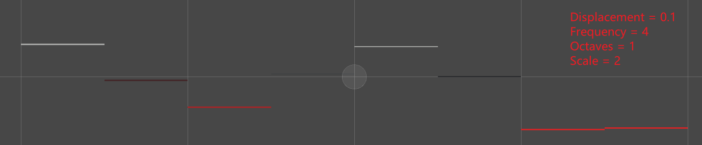
Radially-symmetrical Falloff
上面方式生成的噪声是不连续的，为了将其变为连续的形式，我们需要在一个 lattice point 到下一个 lattice point 的过程中引入平滑变换。常规的 Lattice Noise 通过插值来在 lattice points 之间进行混合，Simplex Noise 则是通过限制每个 Lattice Point 的影响来实现的。实施这样的限制是 Kernel 的职责，其定义了一个衰减函数，在当前 lattice point 上时，函数值为 1，到达相邻的 Lattice Point 时，函数值减少为 0 (从左右两个方向都是如此)。因此，该 Kernel 为对称的 Kernel。
最简单的衰减函数为 f(x) = 1 - |x|, 该函数从 1 开始，在相邻的 Lattice Point 时衰减为 0. 用其缩放生成的梯度得到最终的 Kernel 样本。这样得到的 1D 噪声图如下：
static float4 Kernel(SmallXXHash4 hash, float4 lx, float4x3 positions) { float4 x = positions.c0 - lx; float4 f = 1f - abs(x); // use f scale gradient return f * default(G).Evaluate(hash, x); }
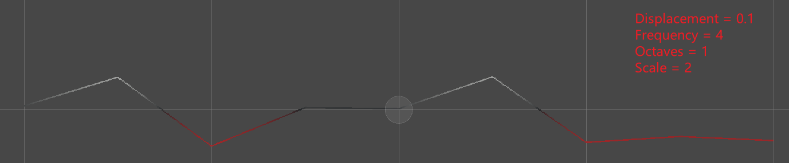
上面的噪声是连续的，其等价于简单的线性插值，因此其不平滑(smooth)。为了得到平滑的常规的值噪声，我们需要使用二阶连续的插值方法。同样地，我们可以使用二阶连续的衰减函数，从而使得 Simplex Noise 平滑。
将函数 \(f(x) = 1 - x^2\) 作为衰减函数，可以引入引入弯曲，其一阶导数为 \(f'(x)=-2x\) ，二阶导数为 \(f"(x)=-2\) ，这两个函数在 x=1 和 x=-1 两个端点都不为 0。因此，该衰减函数在两个端点处依然是不连续的。另外，在 lattice point 中间位置，f(1/2) = 1-0.25 = 0.75，噪声值为两个 Kernel 样本叠加，因此，噪声值此时可能会超过 1。函数 \(f(x) = 1 - x^2\) 作为衰减函数对应的噪声图如下：
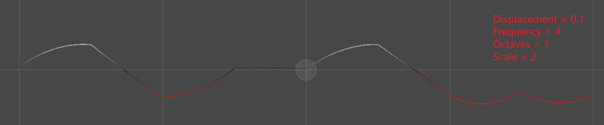
将函数 \(f(x) = (1 - x^2)^2\) 作为衰减函数，其一阶导数为 \(f'(x)=4x^3-4x\) ，二阶导数为 \(f"(x)=12x^2-4\) ，f'(1)=0 f'(-1)=0 f"(1)=8 f"(-1)=8，因此，该衰减函数在 -1，1 处一阶连续，但是二阶不连续。其对应的噪声图如下：
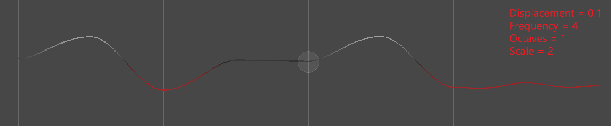
将函数 \(f(x) = (1 - x^2)^3\) 作为衰减函数，其一阶导数为 \(f'(x)=-6x^5+12x^3-6x\) ，二阶导数为 \(f"(x)=-30x^4+36x^2-6\) ，f'(1)=0 f'(-1)=0 f'(0)=0 f"(1)=0 f"(-1)=0 f"(0)=-6，因此，该衰减函数在 0，-1，1 处一阶连续，在-1，1 处二阶连续，但在 0 处二阶不连续。在 Lattice Point 处二阶导数不为 0 没关系，这是 Kernel 衰减函数切换方向的地方，Kernel 影响 Lattice Point 的两边，只需要在 Kernel 边缘达到 0 即可。其对应的噪声图如下：
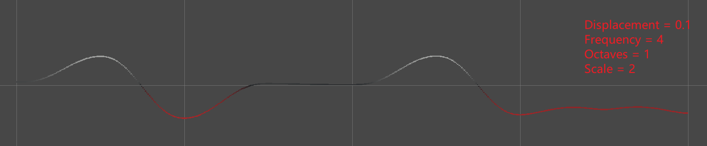
2D Kernels
public struct Simplex2D<G> : INoise where G : struct, IGradient { public float4 GetNoise4(float4x3 positions, SmallXXHash4 hash, int frequency) { positions *= frequency; int4 x0 = (int4)floor(positions.c0); int4 x1 = x0 + 1; int4 z0 = (int4)floor(positions.c2); int4 z1 = z0 + 1; SmallXXHash4 h0 = hash.Eat(x0); SmallXXHash4 h1 = hash.Eat(x1); return default(G).EvaluateCombined( Kernel(h0.Eat(z0), x0, z0, positions) + Kernel(h0.Eat(z1), x0, z1, positions) + Kernel(h1.Eat(z0), x1, z0, positions) + Kernel(h1.Eat(z1), x1, z1, positions) ); } static float4 Kernel(SmallXXHash4 hash, float4 lx, float4 lz, float4x3 positions) { float4 x = positions.c0 - lx; float4 z = positions.c2 - lz; float4 f = 1 - x * x - z * z; f = f * f * f; return f; } }
使用上面 Kernel 函数得到的图形如下:

上图边界点上是黑色，是由于 f(0,0)=(1-0-0)^3=1 f(1,0)=(1-1-0)^3=0 f(0,1)=(1-0-1)^3=0 f(1,1)=(1-1-1)^3=-1 因此，f(0,0)+f(1,0)+f(0,1)+f(1,1)=0 ，通过对 Kernel 做 Clamp 可以修复该问题，此时得到的图形如下：
static float4 Kernel(SmallXXHash4 hash, float4 lx, float4 lz, float4x3 positions) { float4 x = positions.c0 - lx; float4 z = positions.c2 - lz; float4 f = 1 - x * x - z * z; f = f * f * f; return max(0f, f); }
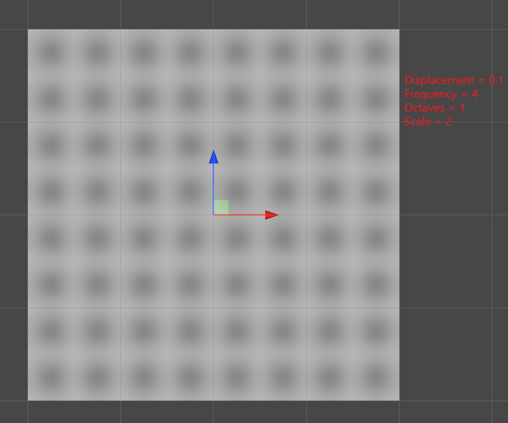
2D Simplexes
2D Simplexes 是三角形。使用等边三角形网格可以平铺（tile）二维空间。我们可以将基于方块的方式转化为三角形 lattice 的方式。首先，将一个方块沿着 XZ 对角线进行缩放（这种变形操作被称为切变），得到一个菱形。再将该菱形沿着 XZ 对角线分割，得到两个朝向相反的三角形。下图展示了从正方形切变为菱形：

上面切变将所有点沿着 XZ 对角线方向移动，并且移动的距离和被移动点的 XZ 坐标和有关系，假设移动距离为 v(x+z)。
从正方形切变为菱形：
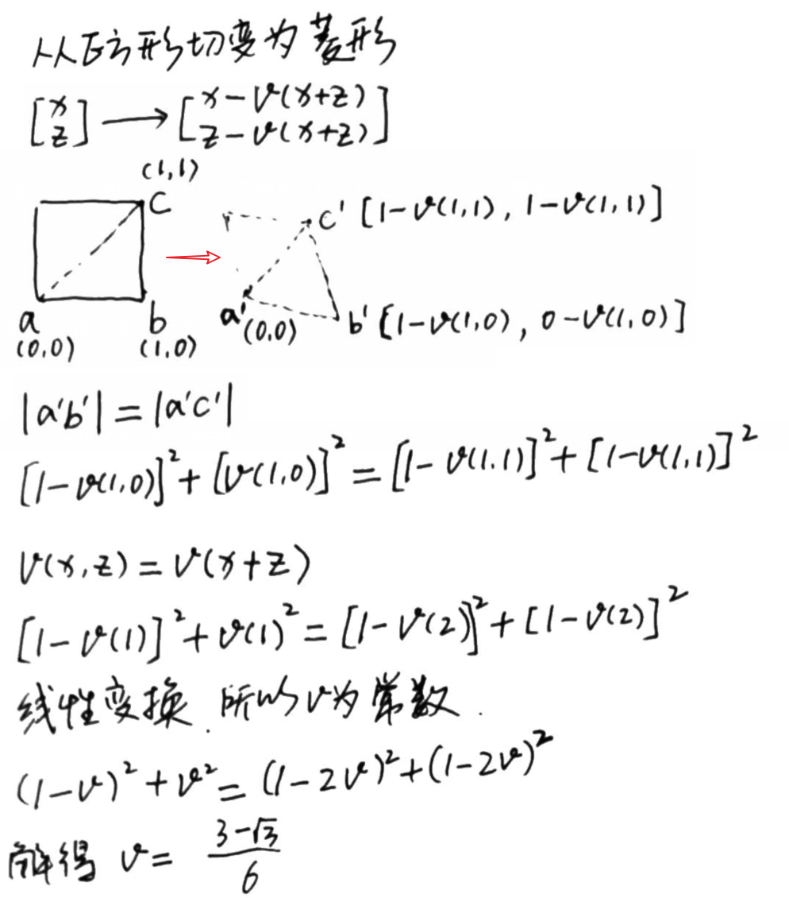
从菱形切变为正方形：
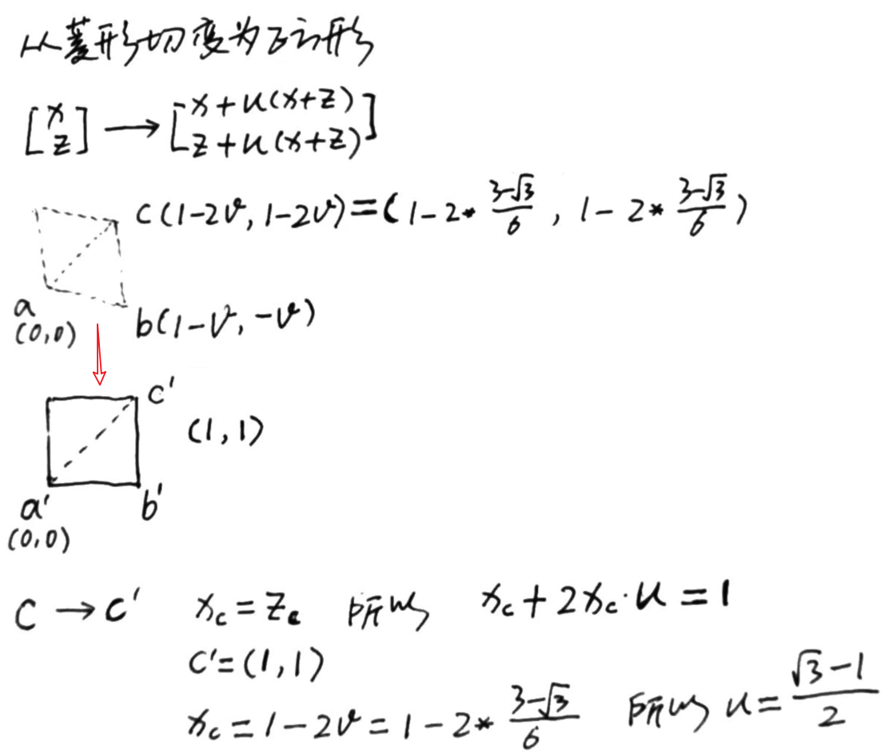
- 另一种切变
下面文件可视化展示了另一种切变矩阵(切变后的菱形和正方形面积相等)：
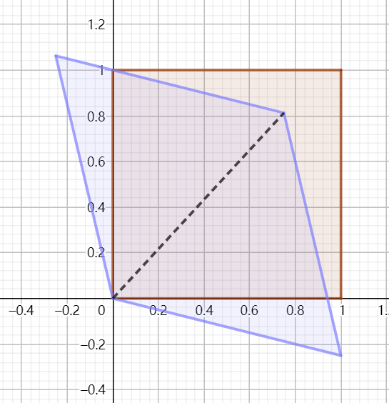
./UnityCatLikeCoding/noise03_simplex_2d-skewMatrix.ggb
下图展示了从正方形切变为菱形的切变矩阵推导：
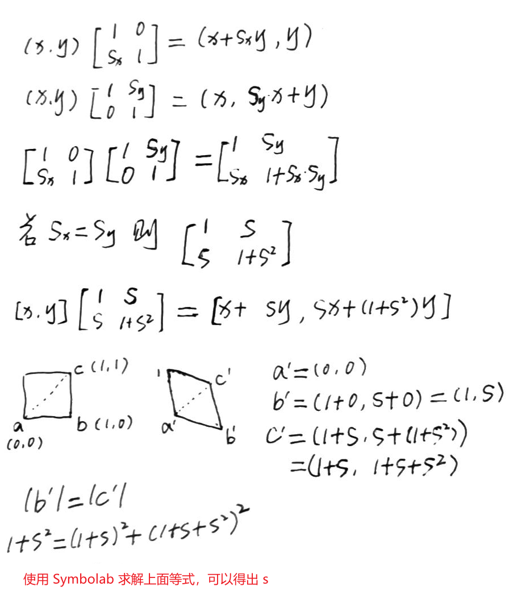
- 三角形 lattice
Simplex2D 使用三角形 lattice，我们需要利用前面得出的 skew 变换将菱形变换为正方形，来构建三角形格子。这样可得到如下 2D Kernel 图形：
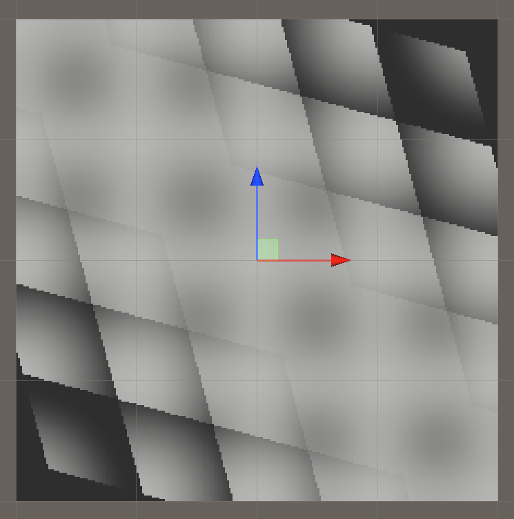
上面虽然构建出正确的菱形格子了，但是计算 Kernel 时使用的是切变为正方形的坐标，因此噪声值不连续。将坐标再变换回菱形后，得到如下 2D Kernel 图形:
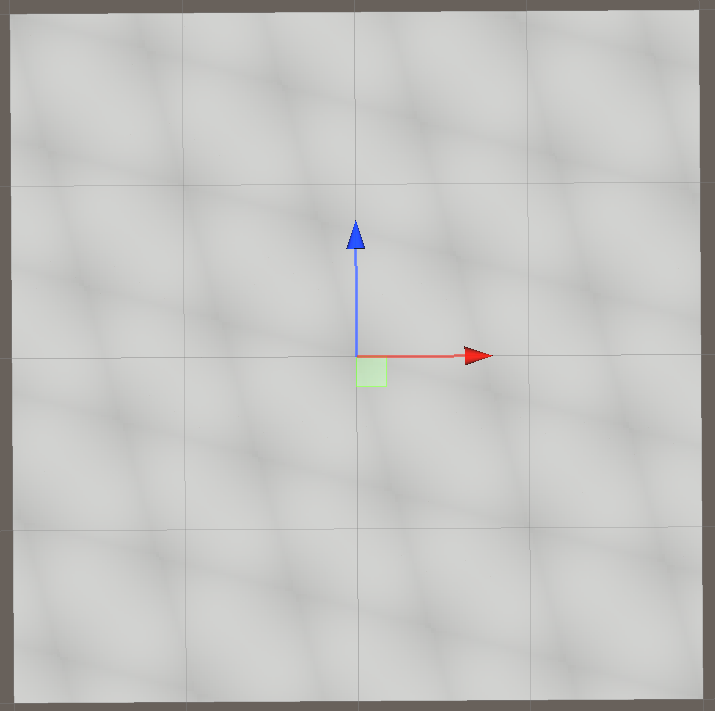
从上图可以看出，Kernel 的影响范围过大了，这是因为三角形区域比正方形区域小很多。对于某个晶格点来说，衰减值应该该晶格点所对的边的中点处变为零。我们可以通过将 Kernel 的起始强度降低到 0.5 来做到这一点（因为，三角形的高的平方为 0.5，具体推导如下）。得到如下 2D Kernel 图形：
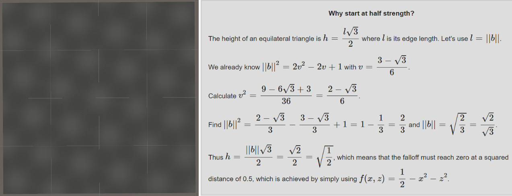
上面将 Kernel 的起始强度降低为 0.5，导致最终计算出的 Kernel 值被减弱了 8 倍( f(0,0)=0.5^3=1/8 )。对最终 Kernel 值进行放大 8 被后得到如下 2D Kernal 图形：
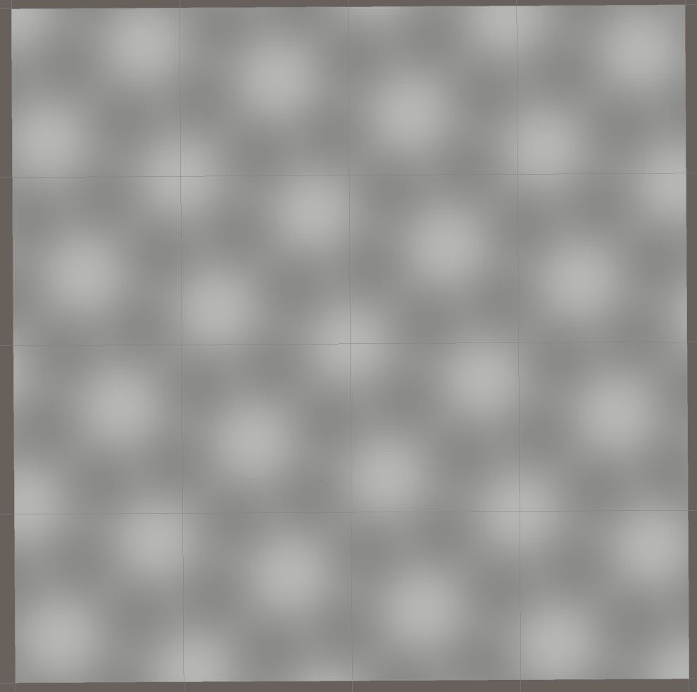
由于 Simplex 2D 的三角形晶格比正方形面积小，Simplex 2D 噪声频率显得比基于正方形晶格的噪声要高。菱形面积比正方形面积缩小√3，因此将频率缩小 1/√3，可以使两者频率看起来近似。
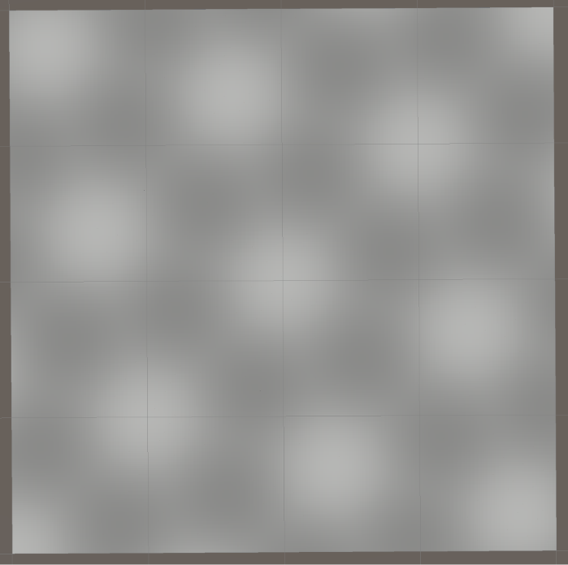
下面使 Simplex 2D 噪声和常规值噪声的对比：
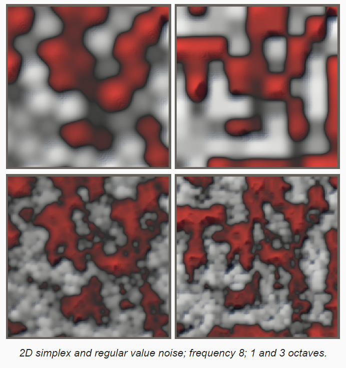

Simplex 2D 噪声将噪声模式变形为类似蜂巢格子的形状，并且 Simplex 2D 噪声整体更弱一些。模式上的差别在 Turbulence 变体中更加明显。
Only Three Kernels
上面计算 Simplex 2D 噪声时，使用了 4 个 Kernels，实际上每个三角形只需要 3 个 Kernels 就够了。Kernel00 Kernel11 是组成菱形的两个三角形都使用的 Kernel，Kernel01 和 Kernel10，则只被用于其中一个三角形。
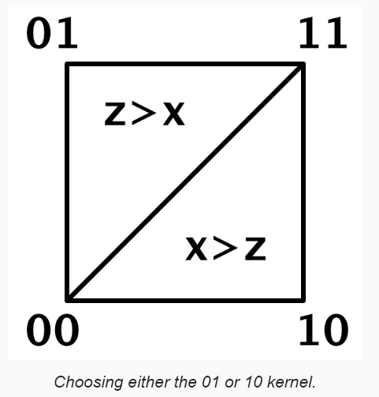
3D Simplexes
生成 3D Simplex lattice 的方式和生成 2D Simplex lattice 类似。对比如下:
| 2D Simplex | 3D Simplex |
|---|---|
| 将正方形变为菱形(rhombohedron) | 将立方体变为菱面体(rhombohedron) |
| 将 1 个正方形划分为 2 个三角形 | 将 1 个正方体划分为 6 个四面体(tetrahedra) |
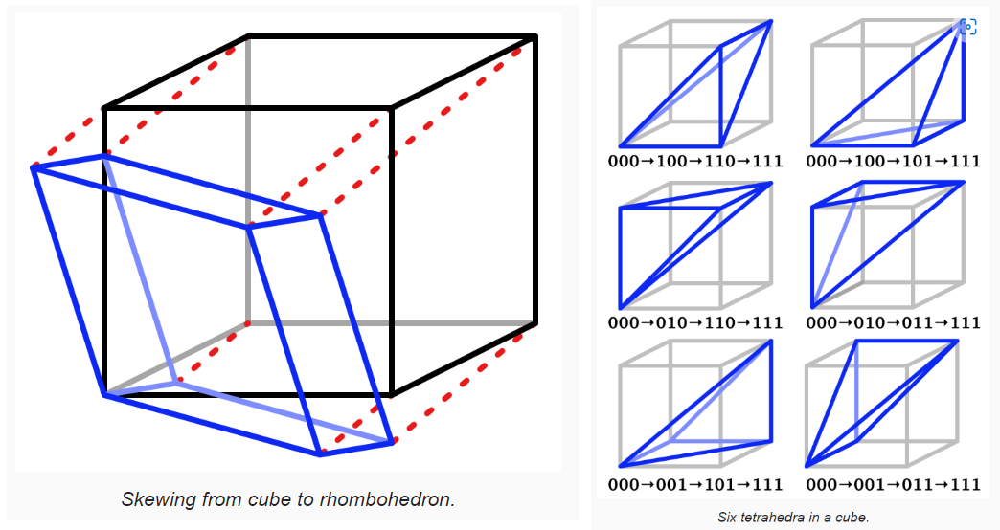
从立方体变为菱面体：
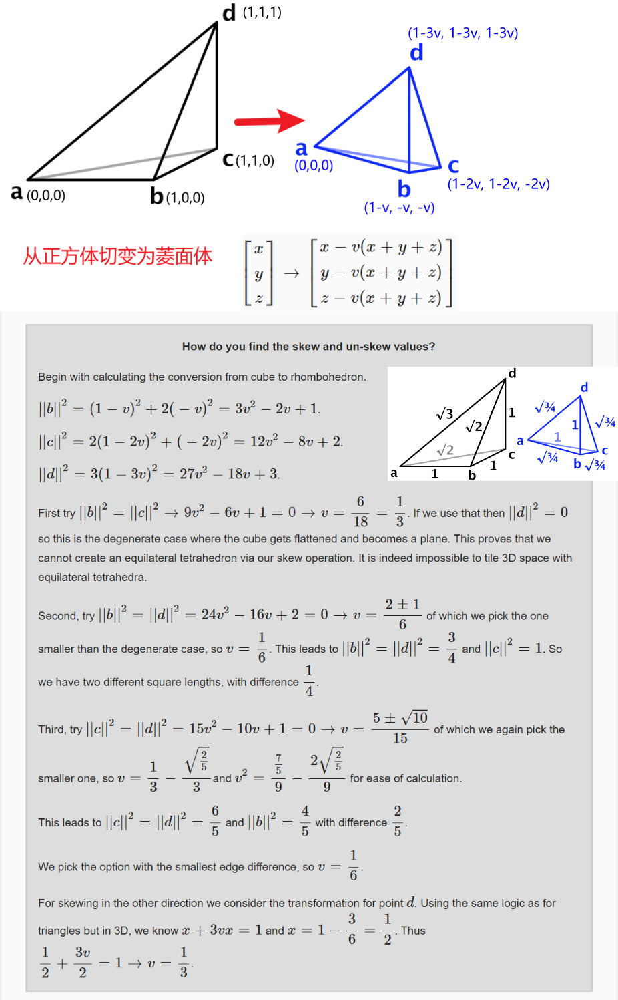
从菱面体变为立方体：
菱面体体积比正方体体积缩小 1/2。下面文件展示了菱面体体积求解过程。需要注意的是原文中是通过计算 XZ 直线上两个晶格点的距离来推算缩放系数的，其计算的缩放系数为 0.6，这可以保证 2D 形状下，Simplexes2D 和 Simplexes3D 的频率一致。
./UnityCatLikeCoding/noise03_simplex_3d_tetrahedraVolume.ggb
Four Kernels
立方体有 8 个顶点，对应 8 个 Kernels，而四面体只有 4 个顶点，因此只需要在 8 个 Kernels 中选择 4 个 Kernels 即可。其中(0,0,0) 和 (1,1,1) 这两个顶点 6 个四面体都会用到，只需要根据当前点坐标来选择另外两个顶点就可以了。下图展示了，选择另外两个顶点的方法：
Simplexes 3D Kernels 有明显的对角线模式（Pattern），如下图。这是由于 3D 切变导致的，平面上样本点到晶格点的 Y 维度距离在不断变化。
Pattern 的形状依赖于 2D 切片的朝向，如下分别展示了绕 XYZ 旋转 45 度得到的 Kernels 的 Pattern：

下图为同时绕 XY 旋转 45 度得到的 Kernels 的 Pattern：
下图为 3D Simplex value Noise：
下图为 3D Simplex Value Noise 和 Value Noise 的对比：
Simplex Gradient Noise
Base Gradients
在 Perlin 噪声中，我们是基于正方形和八面体来生成梯度向量的，这种方式适用于正方形和立方体的格子空间。对于单形噪声来说，其格子空间是非轴对齐的，因此需要使用圆形和球体来生成梯度向量。
public static class BaseGradients { // 生成1维值 public static float4 Line(SmallXXHash4 hash, float4 x) { return (1 + hash.Floats01A) * select(-x, x, ((uint4)hash&1 << 8) == 0); } // 生成2维向量 public static float4x2 SquareVectors(SmallXXHash4 hash) { float4x2 v; v.c0 = hash.Floats01A * 2f - 1f; v.c1 = 0.5f - abs(v.c0); v.c0 -= floor(v.c0 + 0.5f); return v; } // 生成3维向量 public static float4x3 OctahedronVectors(SmallXXHash4 hash) { float4x3 g; g.c0 = hash.Floats01A * 2f - 1f; g.c1 = hash.Floats01D * 2f - 1f; g.c2 = 1f - abs(g.c0) - abs(g.c1); float4 offset = max(-g.c2, 0f); g.c0 += select(-offset, offset, g.c0 < 0f); g.c1 += select(-offset, offset, g.c1 < 0f); return g; } public static float4 Square(SmallXXHash4 hash, float4 x, float4 y) { float4x2 v = SquareVectors(hash); return v.c0 * x + v.c1 * y; } // x, y 输入可以是任何形状的格子，因为这里对梯度向量进行了归一化 public static float4 Circle(SmallXXHash4 hash, float4 x, float4 y) { float4x2 v = SquareVectors(hash); // * rsqrt(v.c0 * v.c0 + v.c1 * v.c1) 就是对2维向量进行归一化 return (v.c0 * x + v.c1 * y) * rsqrt(v.c0 * v.c0 + v.c1 * v.c1); } public static float4 Octahedron(SmallXXHash4 hash, float4 x, float4 y, float4 z) { float4x3 v = OctahedronVectors(hash); return v.c0 * x + v.c1 * y + v.c2 * z; } // x, y, z 输入可以是任何形状的格子，因为这里对梯度向量进行了归一化 public static float4 Sphere(SmallXXHash4 hash, float4 x, float4 y, float4 z) { float4x3 v = OctahedronVectors(hash); // * rsqrt(v.c0 * v.c0 + v.c1 * v.c1 + v.c2 * v.c2) 就是对3维向量进行归一化 return (v.c0 * x + v.c1 * y + v.c2 * z) * rsqrt(v.c0 * v.c0 + v.c1 * v.c1 + v.c2 * v.c2); } }
1D Simplex Noise
1D Simplex Noise 值归一化：
2D Simplex Noise
2D 情况下，有两个最大值候选: 边的中点和三角形的中心
3D Simplex Noise
参考资料
- 单形 https://zhuanlan.zhihu.com/p/360696236 有道云笔记备份
- 多胞形 polytope https://baike.baidu.com/item/%E5%A4%9A%E8%83%9E%E5%BD%A2